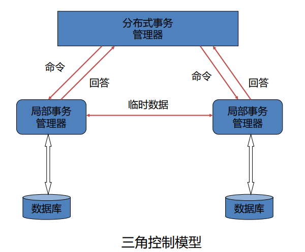

分布式数据库总结
第1、2章 绪论&分布式数据库系统设计 总结
数据库根据其数据模型，可分为
关系型数据库(RDBMS)和非关系型数据库(NOSQL)。根据部署架构，可分为集中式数据库和分布式数据库。\(E-R\)模型主要包括
实体、属性、联系、连接。在关系\(R\)中选择操作记做：\(\sigma_F(R)=\{r|r\in R\wedge F(r='真')\}\)
已知两个关系\(R\)和\(S\)如图所示，求关系\(R\)和\(S\)的广义笛卡尔积。
分布式数据库物理上分散而逻辑上集中的内涵是：
指站点之间不是互不相关的，它们是一个逻辑整体，并由一个统一的分布式数据库管理系统进行管理。分布式数据库数据分布透明性的内涵是：
是指用户不必关心数据是如何被逻辑分片的(数据分片透明性)，不必关心数据及其片段是否被复制及复制副本的个数（数据复制透明性）,也不必关心数据及其片段的物理位置分布的细节(数据位置造明性)，同时也不必关心局部场地上数据库支持哪种数据模型（局部数据模型透明性）。数据分片有三种基本方法：
水平分片、垂直分片和混合分片。闸述数据分片要遵守的原则：
完备性原则：要把全局关系的所有数据映射到各个片段中绝不允许有属于全局关系的数据却不属于它的任何一个片段。可重构原则：保证能够由同一个全局关系的各个片段来重建该全局关系，对于水平分片可用并操作重构全局关系，对于垂直分片可用连接操作重构全局关系。不相交原则：一个全局关系被分割后所得的各数据片段互不重叠 (对水平分片) 或只包含主键重叠(对垂直分片)。
数据分布的含义和方式是：
数据分布指分布式数据库中的数据根据需要将数据划分成逻辑片段，按某种策略把数据分片所得的逻辑片段分散地存储在各个站点上。数据分布有集中式、分割式、复制式和混合式。数据库系统通常采用三级模式结构，是数据库系统内部系统结构，三级模式分别为：
外模式、概念模式、内模式。分布式数据库模式结构包括：
全局外模式、全局概念模式、分片模式、分配模式、局部概念模式和局部内模式。一个分布式数据库管理系统一般应包括四个基本功能模块分别是，
查询处理模块、完整性处理模块、调度处理模块和可靠性处理模块。分布式数据库的数据分布独立性的含义是：
指用户或用户程序使用分布式数据库如同使用集中式数据库那样，不必关心全局数据的分布情况，包括全局数据的逻辑分片情况、逻辑片段的站点位置分配情况，以及各站点上数据库的数据模型等。也就是说，全局数据的逻辑分片、片段的物理位置分配、各站点数据库的数据模型等情况对用户和用户程序透明。分布式数据库的分片透明性是指：
用户编写应用程序只对全局关系进行操作，不必考虑数据的逻辑分片，当分片模式改变时，只要改变全局概念模式到分片模式之间的映像，就不会影响用户程序，从而实现了数据分片透明性。分布式数据库的位置透明性含义是：
位置透明性包含两种情形：一种是各片段被复制情况也称复制透明性或数据冗余透明性；另一种是片段及其各副本的站点位置分配情况。当分布式数据库具有位置透明性时，用户编写应用程序要了解全局数据的数据分片情况，但不必了解各逻辑片段的复制副本情况，也不必关心各片段及其副本的站点位置分配情况。考全局关系 \(SUPPLIER(SNO, SNAME, CITY)\) 被划分为两个逻辑片段\(S_1\)和\(S_2\)，若片段\(S_1\)存放在站点\(L_1\)上，而片段\(S_2\)有一个副本，分别存放在站点\(L_2\)和站点\(L_3\)上。现在编写一个名为 SUPQUIRY 的简单查询应用程序，它将从终端接收一个供应商号，查询该供应商号相应的供应商名，并将它显示在屏幕上。将分析这个应用在逐步减低分布透明性的不同层次上，如何来编写访问此数据库的程序。
分片透明性：只需要考虑全局数据模型，不必考虑数据的如何分片
1
2
3
4
5Read(terminal, $SNO);
Select SNAME into $SNAME
FROM SUPPLIER
WHERE SNO=$SNO;
WRITE(terminal, $SNAME);位置透明性：需要考虑数据的分片，不需要考虑数据的分配
1
2
3
4
5
6
7
8
9Read(terminal, $SNO);
Select SNAME into $SNAME
FROM SUPPLIER1
WHERE SNO=$SNO;
if not # FOUND then
Select SNAME into $SNAME
FROM SUPPLIER2
WHERE SNO=$SNO;
WRITE(terminal, $SNAME);本地映射透明性：需要考虑数据的分配，不需要考虑本地的存储位置
1
2
3
4
5
6
7
8
9Read(terminal, $SNO);
Select SNAME into $SNAME
FROM SUPPLIER1 AT SITE1
WHERE SNO=$SNO;
if not # FOUND then
Select SNAME into $SNAME
FROM SUPPLIER2 AT SITE3
WHERE SNO=$SNO;
WRITE(terminal, $SNAME);
分布式数据库的优点有哪些：
良好的可靠性和可用性，提高系统效率，降低通信费用，较大的灵活性和可伸缩性，经济性和保护投资，适应组织的分布式管理和控制，数据分布具有透明性和站点具有较好的自治性（良、提、较、经、适、数）。分布式数据库系统设计的两种方法分别是：
组合法和重构法自顶向下设计分布式数据库的主要步骤包括：
需求分析、概念设计、逻辑设计、分布设计和物理设计。基本水平分片是指：
以关系自身的属性性质为基础，执行“选择”操作，将关系分割成若干个不相交的片段。导出水平分片是指：
从另一个关系的属性性质或水平分片推导出来。垂直分片问题和垂直群集问题的区别是：
垂直分片的组必须只在某个键属性上重叠，其他属性不可重叠，而垂直群集的组在其他属性上也可以重叠。已知\(EMP(E\)#\(, NAME, SAL, TEL, MAGNUM, DEPT)\)，假定 Key：\(E\)#，主要用\(Sa\)站点查询\(NAME,SAL,TEL\);\(Sc\)站点查询\(NAME,MAGNUM,DEPT\)。给出了一个垂直分片和垂直群集。
- 垂直分片：\(EMP1(E\)#\(,NAME,SAL,TEL)\)，\(EMP2(E\)#\(,MAGNUM,DEPT)\)
- 垂直群集：\(EMP1(E\)#\(,NAME,SAL,TEL)\)，\(EMP2(E\)#\(,NAME,MAGNUM,DEPT)\)
针对分布式数据库的数据分配的方法
- 非冗余：
最佳适应法 - 冗余分配的设计可选用以下两种方法的一种：
所有得益站点法和附加复制法。
- 非冗余：
数据库设计的步骤：
- 自顶向下设计分布式数据库步骤：
需求分析、概念设计、逻辑设计、分布设计、物理设计 - DATA-D设计步骤：
需求分析、概念设计、分布要求设计、全局逻辑设计、分布设计、局部逻辑设计、局部物理设计
- 自顶向下设计分布式数据库步骤：
第3、4章 分布式数据库的查询处理和优化&分布式数据库中事务管理和恢复
在关系代数操作中，五种基本操作为：
并、交、笛卡尔积、选择、投影设关系R和S如下图所示，求关系R和S的连接：\(R\infin_{C<E}S\)：
\[ R=\ \begin{array}{|c|c|c|} \hline A&B&C\\ \hline a1&b1&5\\ \hline a1&b2&6\\ \hline a2&b3&8\\ \hline a2&b4&12\\ \hline \end{array}\ \ \ \ S=\ \begin{array}{|c|c|c|} \hline B&E\\ \hline b1&3\\ \hline b2&7\\ \hline b3&10\\ \hline b3&2\\ \hline b5&2\\ \hline \end{array}\\ R\infin_{C<E}S= \begin{array}{|c|c|c|} \hline A&R.B&C&R.B&E\\ \hline a1&b1&5&b2&7\\ \hline a1&b1&5&b3&10\\ \hline a1&b2&6&b2&7\\ \hline a1&b2&6&b3&10\\ \hline a2&b3&8&b3&10\\ \hline \end{array} \]
各种连接操作合集：
- 笛卡尔积：R（m个元组，n个属性），S（a个元组，b个属性），笛卡尔积结果有（a * m个元组，n + b个属性）
- 连接运算（\(\theta\)连接）：从两个关系的笛卡尔积中选取属性间满足一定条件的元组，涉及到两个关系中的属性的比较。
- 等值连接：\(\theta\)为“=”的连接操作
- 自然连接：是一种特殊的等值连接，要求两个关系中进行比较的分量必须是相同的属性组，并且要在结果中把重复的属性去掉。
- 【重点】注意是去掉重复的属性，即相同属性名的属性只出现一次，而等值连接中是重复属性重复出现
- 半连接：自然连接后，仅保留左关系中的属性
- 教学数据库中，有三个全局关系：学生信息\(S(S\#,SNAME,AGE,SEX)\)，课程设置关系\(C(C\#,CNAME,TEACHER)\)，选课关系\(SC(S\#,C\#,GRADE)\)，查询选修课程号为\(C03\)的学生姓名。请写出该查询要求的其中一种的关系代数表达式，并画出对应的查询树
- 关系代数表达式：\(\pi_{SNAME}(\sigma_{S.S\#=SC.S\# \wedge SC.C\#='C03'}(S\times SC))\)
- 查询树：
- 设关系R和S如下图所示，求关系R和S的等值连接\(R\infin_{R.B=S.B}S\)
\[ R=\ \begin{array}{|c|c|c|} \hline A&B&C\\ \hline a1&b1&5\\ \hline a1&b2&6\\ \hline a2&b3&8\\ \hline a2&b4&12\\ \hline \end{array}\ \ \ \ S=\ \begin{array}{|c|c|c|} \hline B&E\\ \hline b1&3\\ \hline b2&7\\ \hline b3&10\\ \hline b3&2\\ \hline b5&2\\ \hline \end{array}\\ R\infin_{R.B=S.B}S= \begin{array}{|c|c|c|} \hline A&R.B&C&R.B&E\\ \hline a1&b1&5&b1&3\\ \hline a2&b2&6&b2&7\\ \hline a2&b3&8&b3&10\\ \hline a2&b3&8&b3&2\\ \hline \end{array} \]
- 设关系R和S如下图所示，求关系R和S的半连接\(R\propto S\)
\[ R=\ \begin{array}{|c|c|c|} \hline A&B&C\\ \hline a1&b1&5\\ \hline a1&b2&6\\ \hline a2&b3&8\\ \hline a2&b4&12\\ \hline \end{array}\ \ \ \ S=\ \begin{array}{|c|c|c|} \hline B&E\\ \hline b1&3\\ \hline b2&7\\ \hline b3&10\\ \hline b3&2\\ \hline b5&2\\ \hline \end{array}\\ R\propto S= \begin{array}{|c|c|c|} \hline A&B&C\\ \hline a1&b1&5\\ \hline a1&b2&6\\ \hline a2&b3&8\\ \hline \end{array} \]
查询代价公式：
集中式：\(QC=I/O代价 + CPU代价\)
分布式：\(QC=I/O代价 + CPU代价 + 通信代价\)
- 通信代价：\(TC(X)=C_0+C_1\times X\)
分布式环境下的查询可分为三种类型：
局部查询、远程查询、全局查询分布式查询处理的层次结构：
查询分解（转换为关系代数表达式）、数据本地化（将全局关系代数表达式转换为局部的关系代数表达式）、全局优化（找出分片查询的最佳操纵次序，使得代价函数最小）、局部优化（进行局部数据查询优化）阐述基于关系代数等价变换优化算法的基本原理：
把查询问题转变为关系代数表达式，分析得到查询树（语法树），进行从全局到片段的变换得到基于片段上的查询树，然后利用关系代数式等价变换规则的优化算法，尽可能先执行选择和投影操作。这样，一方面可以减少其后操作的操作量，另一方面可以减少操作次数。对该查询树进行优化，从而达到查询优化的目的。
关系代数等价变换规则
阐述水平分片关系优化的基本思想：
首先，尽可能把选择条件下移到分片的限定关系处（分片条件），再把分片的限定关系与选择条件进行比较，去掉它们之间存在矛盾的相应片段，如果最后剩下一个水平片段，则重构全局关系的操作中，就可去掉“并”操作 (至少可减少“并”操作的次数)。
阐述垂直分片关系优化的基本思想：
把垂直分片所用到的属性集，与查询条件（查询表达式）中的投影操作所涉及的属性集相比较，去掉无关的垂直片段。如果只剩下一个垂直片段与查询有关时，去掉重构全局关系的“连接”操作 （至少可减少“连接”操作的次数）。
请利用半连接方法来表示连接操作
- \(R\infin_{A=B}S=(R\propto_{A=B}S)\infin_{A=B}S=(R\infin_{A=B}(\pi_B(S))\infin_{A=B}S)\)
阐述采用半连接算法优化连接操作的基本思想：
- 采用半连接操作的分布式查询处理的本质是在从一个站点传送关系到另一个站点做连接之前，先除去那些与连接无关的数据，减少做连接操作的关系中的数据量，从而减少传输的代价。因此，基于半连接算法优化连接查询，其基本原理是经半连接操作，可减少操作关系的数据量，从而减少站点间数据的传输量。所以，如果只需要一个关系中的一小部分元组参与和另一个关系连接的话,这是一个使数据传输量最小化的非常有效的方案,此时有\(T_{半}<T_{全}\)，采用半连接方案是合适的。
阐述数据库中事务的概念
事务是访问或更新各种数据项的最小逻辑工作单位；它是一个操作序列；它可以使数据库从一个一致状态到另外一个一致状态；事务必须保证数据库的一致性；事务执行期间数据库可能不一致。- 单位、序列、状态、一致性、不一致
阐述事务的ACID特性
原子性 Atomicity：事务的操作要么全部执行，要门全部不执行，保证数据库一致性状态。一致性 Consistency：事务的正确性、串行性。隔离性 Isolation：单个事务的执行不应该感知其他事务的存在，因此事务执行的中间结果应该对其他事务隐藏持久性 Durability：当事务提交后，其操作的结果将永久化
列举分布式事务的状态
活动：从事务开始执行的初始状态开始，事务执行中保持该状态部分提交：事务的最后一个语句执行后进入该状态失败：一旦发现事务不能正常执行时进入该状态夭折：当事务被回滚后，数据库恢复到事务开始执行前的状态。事务夭折后有两种选择重启动 redo：仅当没有内部错误逻辑时杀死 undo
提交：当事务成功执行后
分布式事务管理器的功能有哪些
保证分布式事务ACID特性负责协调由该站点发出的所有分布式事务的执行支持分布式事务执行位置透明性
本地事务管理器 LTM 的功能
保证本地事务 ACID 特性维护日志参与适当的并发控制
分布式事务执行的控制模型有哪些
主从模型：主、从控制器，LTM之间无通信三角模型：LTM之间可以传递数据，避免了主从之间不必要的传输- 
层次控制模型：LTM还可创建Agent，控制其他LTM执行，比前两种复杂
什么时候达到事务的提交点
当事务T所有的站点数据库存取操作都已成功执行，所有操作对数据库的影响都已记录在日志中，到达提交点。
如图所示的故障时刻和提交点的位置，以及每个事务的执行时间区间，请问那些事务需要 redo，那些事务需要 undo
- 事务\(T_2\)和事务\(T_3\)需要 redo，事务\(T_4\)需要 undo
- 有逻辑错误的 undo，在上一个检查点到下一个检查点之间的提交的事务 redo
故障类型：
- 事务故障
- 系统故障
- 介质故障
- 前三种称为站点故障
- 通讯故障
两阶段提交协议包括哪两个阶段
第一阶段：表决阶段第二阶段：执行阶段
阐述两阶段提交协议：
（应该会考）表决阶段：首先，协调者给所有参与者发送“准备”消息，进入等待状态。其次，参与者收到“准备”消息后，检查是否能够提交本地事务，如能，给协调者发送“建议提交”消息，进入就绪状态；如不能，给协调者发送“建议撤销”消息，可以单方面撤销。第三，协调者收到所有参与者的消息后，他就做出是否提交事务的决定，只要有一个参与者投了反对票,就决定撤销整个事务，发送“全局撤销”消息给所有参与者，进入撒销状态，否则，就决定提交整个事务，发送“全局提交”消息给所有参与者，进入提交状态。执行阶段：实现表决阶段的决定，提交或者撤销。
阐述主文本更新法的思想：
指定主副本，修改只对主副本进行，修改辅助副本时，也按在主副本上执行的更新顺序执行。
第5、6章 分布式数据库中的并发控制&分布式数据库中的可靠性
- 分布式数据库并发控制的作用
解决多个分布式事务对数据并发执行的正确性保证数据库的完整性和一致性
- 什么是可串行化调度
如果一个调度等价于某个串行调度，则该调度称为可串行化调度。也就是说，该调度可以通过一系列非冲突动作的交换操作使其成为可串行化调度
- 优先图的画法
- 调度\(S\)的可串行化的条件是
当且仅当优先图中没有闭环时，调度$S$是可串行化的
- 并发控制算法：
悲观法加锁法集中式加锁主副本加锁分布式加锁
时标排序法基本时标排序多版本时标排序保守时标排序
混合法
乐观法加锁法时标排序法
- 分布式数据库系统并发控制机制的封锁技术中，锁的类型有哪几种？
共享锁：Share 锁、S 锁或者读锁排他锁：eXclusive 锁，X锁，拒绝锁或写锁更新锁：Update 锁、U 锁
- 两阶段封锁协议的两阶段指的是哪两个阶段
上升阶段（成长阶段）：获取 Lock 阶段（只能获取锁）收缩阶段（衰退阶段）：释放 Lock 阶段（只能解锁）
- 保守两阶段封锁协议：
事务在开始执行前就持有所有锁要预先定义读集和写集
- 严格两阶段封锁协议的特点：
事务在提交或者撤销之前，绝对不释放任何一个写锁。事务结束时（提交或者撤销），同时释放所有锁。
- 严酷两阶段封锁协议的特点：
事务在提交或者撤销之前，绝对不释放任何一个锁。事务结束时（提交或者撤销），同时释放所有锁。
- 保守和严酷的区别
保守一开始就处在收缩阶段严酷一直处于扩张阶段
- 意向锁的类型：
意向共享锁（IS）：指示在其后代节点上将会请求共享锁，即如果对某个对象加 IS 锁，表示它的后代结点拟加共享锁。意向排他锁（IX）：指示在其后代节点上将会请求排他锁，即如果对某个对象加 IX 锁，表示它的后代结点拟加排他锁。共享意向排他锁（SIX）：指示当前节点处在共享方式的封锁中，但是在它的某些后代节点中将会请求排他锁。即如果对一个数据对象加 SIX 锁，表示对它加共享锁，再加 IX 锁（SIX = S + IX）。例如：对某个表加 SIX 锁，则表示该事务要读整个表（加 S 锁），同时会更新个别元组（加 IX 锁）。
- 有死锁危险时，事务退出已占有的资源，有两种方法
等待-死亡（Wait-Die）：总是重启较年轻的事务（非占先权）老的等待、新的死亡
受伤-等待（Wound-Wait）：年轻的等待年老的，较年轻的重启，而重启事务并不一定是目前正申请的事务（占先权）老的受伤（阻塞）、新的等待
- 保守时标法的思想是什么
一种消除重启动的方法，通过缓冲年轻的操作。直至年长的操作执行完成，因此操作不会被拒绝，事务也绝不被重启动。
- MTTR、MTTF、MTBF、MTBR
- 三阶段提交协议比两阶段提交协议在协调者和参与者增加了什么状态
准备提交状态
- 分布式可靠性协议有哪些协议组成
提交协议、终结协议、恢复协议
- 提交协议的作用
详细说明提交命令是如何执行的
- 分布式系统的终结协议的作用是什么
在执行一个分布式事务时，若一个站点出现故障，可以调用终止协议使得其他站点也停止该事务
- 恢复协议：
详细说明恢复命令是如何执行的
- 阐述事务阻断的含义
某个站点上本来可以终结（提交或撤销）的子事务，由于分布式数据库系统出现故障，必须等待到故障恢复（其占有的资源不释放）
- 用自己的语言阐述三阶段提交协议